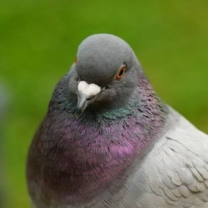

Shahriar Mirnajafi
Undergraduate Student @Amirkabir University of Technology, Tehran
Hi there! I’m an undergraduate student at Amirkabir University of Technology, Tehran, where I develop my skills in Computer Engineering. I am passionate about web technologies and software development and strive to design interactive, high-quality websites.
Throughout my studies, I have engaged in various projects that have allowed me to explore modern web development practices and innovative design patterns. I appreciate the challenge of solving complex problems and continuously learning new skills.
Before joining Amirkabir University, I was active in local tech communities and participated in several hackathons, which further enhanced my coding skills and creativity. I enjoy collaborating with others and believe teamwork is essential to bring innovative ideas to life.
On a personal note, I love to code, explore new technologies, and relish turning creative ideas into reality.
Welcome to my personal website.